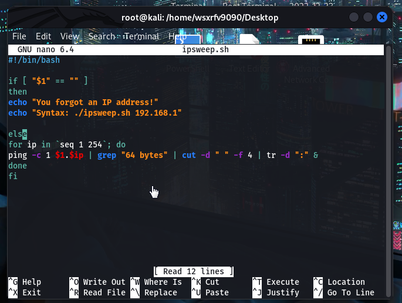

nano ipsweep.sh
create a shell script

declare that you are running this in bash

if you use js it should be #!/bin/javascript
for loop
for .. in .., we want to do something until its done.

ip is a name we gave and can be anything.
seq 1 254 means from 1 to 254.

$1 means user input

when we use it we have to use it in the console like this:

the $1 means 192.168.71
and the $ip means the name ip we just declared here

so the number we go from 192.168.71.1 and all the way to 192.71.1.254
grep "64 bytes" means grab the line out

we just want to have the ip here so we first grep this single line out like this:

then use cut like this:

this means that cut it out, using the delimiter " ", and cut is going to take a field of that delimiter and cut it out.
hence the outcome
then use tr to remove the colon

that's why in the sh file we used it like this:

and fi is the end of the file

after the file is created.
before you use it you have to use chmod +x to give it access to run:
like this:

then you can use it like this:

now we can improve it like this:

then use nmap to sweep those ip like this:
you can change the ; to &
that can go faster
-p means port
-T4 means time 4 means fast